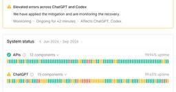

直近1週間の人気フィード
はてなブックマーク数を元に新着優先で並べ替え

RIZAP社員、私用AIに顧客の個人情報入力 氏名や疾患、保険証番号など……同社が謝罪 157ITmedia AI＋ 最新記事一覧
157ITmedia AI＋ 最新記事一覧
RIZAPの社員が、個人で使用している外部の生成AIサービスに、顧客の氏名や疾患などの個人情報・要配慮個人情報を誤ってアップロードしたという。
1日前

OpenAIのAIエージェント、休眠サイトを掲示板化してタスク回答を共有か 研究団体が報告書公開 71ITmedia AI＋ 最新記事一覧
OpenAIの社内AIエージェントが休眠状態の外部Wikiサイトを不正に“掲示板”として利用し、評価タスクの答えや制限回避の手法を共有していたとする報告書を研究団体が公開した。閲覧のみ許可されていた環境の抜け道を突き、GETリクエストで書き込みを行っていた。OpenAI側は内容を精査して対処するとしている。
11時間前

複数のAIサービスで障害発生 ChatGPT／Claude／Grok【復旧済み】 61ITmedia AI＋ 最新記事一覧
日本時間の2026年9月4日午前0時30分現在、複数のAIサービスで障害が発生しており、接続しにくい、もしくは接続できない状態となっている。少なくとも、米OpenAIの「ChatGPT」、米Anthropicの「Claude」、米SpaceXAIの「Grok」で障害が報告されている。
2日前
「AIで業務アプリを作成する仕組み」で特許取得、KDDI傘下のELYZA X上では一部批判も【追記あり】 35ITmedia AI＋ 最新記事一覧
KDDIグループのAI開発企業ELYZAは、法人向けAIツール「ELYZA Works」において、業務アプリをAIで作成する仕組みの特許を取得したと発表した。一方、X上の一部では批判の声も上がっている。
2日前

なぜAI企業は社内で「ソフトウェアエンジニア」と呼ばなくなったのか 広がる「MTS」と職種の未来 33ITmedia AI＋ 最新記事一覧
AnthropicやOpenAIでは、研究者とエンジニアをまたぐ共通の社内肩書きとして「Member of Technical Staff（技術スタッフの一員）」が使われている。元CTOたちが次々とこの肩書きに転じている現象から、肩書きが専門性を証明しなくなった時代に何が価値を決めるのかを考える。
2日前

なのにあなたはKindleで買うの？ Google Play Booksで買った本をGemini Notebookにぶち込めてAI対話できる新機能登場（生成AIクローズアップ） 327 テクノエッジ TechnoEdge
テクノエッジ TechnoEdge
今回は、Googleが発表した、購入した電子書籍をGemini Notebookに取り込み、直接対話できる機能「Expert Intelligence」を取り上げます。
5日前

Macアプリ開発者に「インテル対応終了可能」通知。Appleシリコン未対応には「すぐ移行開始」呼びかけも 42 テクノエッジ TechnoEdge
Appleは2026年9月2日、Mac App Storeに登録するアプリ開発者に対し、インテルMacへの対応を終了可能になったことを告知しました。
3日前

「レビューがしんどい」の正体を、認知的負債から考えてみた 41 フューチャー技術ブログ
フューチャー技術ブログ
AI駆動開発でコードレビューがしんどくなった原因を変更量・PR本文・間違いの見つけにくさの3つに整理し、Technology Radar の「Codebase cognitive debt（認知的負債）」と絡めて考えます。
3日前

とにかく「データが足りない」フィジカルAI AWS支援プログラム採択各社が示す突破口 19ITmedia AI＋ 最新記事一覧
AWSジャパンが8月31日、総額600万米ドル規模の「フィジカルAI開発支援プログラム」の成果報告会を開催した。登壇した多くの企業が語ったのは「データ不足」の壁。半年間の開発から見えた突破口とは。
1日前

副作用の影響範囲を型で示したい — Scala 3 が模索する「Capture Checking」 29 エムスリーテックブログ
エムスリーテックブログ
本記事は、コンシューマーチームブログリレー 1日目です。 はじめに 関数型まつりで触れてから、再び自分の中の Scala 熱が高まっています。エンジニアリンググループ、コンシューマーチーム 兼 WHITEJACK チームの松本です。 Scalaでは従来、Effのようなライブラリを使うことでEffect Systemのようなものを実現できました。しかし学習コストが高く、実行時のインタープリタのコストなどの課題もあります。もっと軽い方法はないのでしょうか。 「OCaml 5 の algebraic effects(effect handlers)に似たことが Scala でできないか」という出発点…
2日前

ビートルズに始まり、バッハ、サティ、モーツァルトまで。「無限音楽機関」はどこまで来たのか、YouTube番組で話してきました（CloseBox） 106 テクノエッジ TechnoEdge
無限音楽機関というのは、筆者が Claudeと一緒に作っている、音楽を無限に生成し続けるブラウザアプリ群の総称です。7月から取り組んできたことと現在地をまとめておきます。
5日前

ゲームソフトのパッケージ版販売終了問題をきっかけに、今の12cm光ディスクがいつまで持ちこたえられるか考えてみる（西川善司のバビンチョなテクノコラム） 32 テクノエッジ TechnoEdge
1990年代から、空気のような扱いをされながらも、確実に進化を遂げてきた12cm光ディスクメディアの現状がどのような状況なのかを把握しよう。
4日前

Claude Codeでトークンリミットが頻発したので、作業ごとにリミットを設定した 58
エムスリーテックブログ
この記事は、Unit7 リサーチプロダクトチームのブログリレー7日目の記事です。 こんにちは、エムスリーエンジニアリンググループ/Unit7 リサーチプロダクトチームでチームリーダーをやっている遠藤です。 皆さん、トークン使い切ってますか？私は24時間トークンを使い切れる人間でありたいと思っています。 エムスリーエンジニアリンググループにおける開発ではAIは使い放題なので、量に切迫しているというわけではありません。それでも個人利用も含めてサブスクプランの上限があれば使い切りたくなってしまうのが人情です。 そして、トークンを使い切ろうとした結果、最近私はトークンリミットと戦っています。 背景: …
4日前

農業AIアシスタント「JD」発表。農業機械からの各種データ分析・意思決定を支援 20
テクノエッジ TechnoEdge
世界最大の農業機械ブランド、ジョンディア（John Deere）は、同社の農業向け管理プラットフォーム「Operations Center」にAIアシスタント「JD」を統合すると発表しました。
4日前
Grillingで詰まったら、推測せず分岐する 58 Algomatic Tech Blog
Algomatic Tech Blog
こんにちは。AlgomaticでソフトウェアエンジニアをしているGo（@53able）です。 mattpocock/skillsは、開発作業の進め方をエージェントに教えるスキル集です。 github.com /grillingは、その中で曖昧な依頼から未決定事項と判断の依存関係を洗い出す役割を担います。未決定事項を掘り下げると、その場では答えられない質問も出てきます。用語や前提を理解していない、担当者の判断が必要になる、実際に試さなければ分からない、といった質問です。 そこで適当に答えると、推測が仕様とチケットへ入り、エージェントは誤った前提をそのまま実装します。 このリポジトリを公開したMa…
5日前

Claude Fable 5.1提供開始 セーフガード誤介入が大幅減、性能向上で半額以下のタスクも。「AIが科学の進歩に貢献する未来の先駆け」 15 テクノエッジ TechnoEdge
Anthropicが新たなAIモデル「Claude Fable 5.1」の提供を開始しました。サイバーセキュリティ等の制限を緩和した上位版「Claude Mythos 5.1」も一部のバートナーに提供します。
4日前

OpenAI、「GPT-6 Astra」を一部組織向けに公開 サイバー能力が初の「Critical」に 4ITmedia AI＋ 最新記事一覧
OpenAIは新モデル「GPT-6 Astra」を公開した。サイバーセキュリティ能力が自社基準で最高の「Critical」に達した初のモデル。提供版は悪用防止のため防御用途に限定し、高度な機能は防御側支援プログラム「Daybreak」で段階的に開放する。数学やコーディング、PC操作など各領域で最高水準を記録した。
2日前

AIエージェントとの協働を考え続けた結果、タスク管理ツールとチャットツールを内製しました 50 Generative Agents Tech Blog
Generative Agents Tech Blog
ジェネラティブエージェンツの大嶋です。 AIエージェントとの協働を考え続けた結果、タスク管理ツールとチャットツールを内製することになり、その取り組みで色々な発見があったので書いていきます。 ※この記事で言う「チャット」は、ChatGPTのように1対1でAIと会話するチャットのことではなく、Slack・Discord・Teamsのようなグループチャットのことです。 社内AIエージェント基盤「タスクゼロ」 私たちの会社では、AIエージェントとの協働のため、「タスクゼロ」というコードネームで社内AIエージェント基盤を開発しています。 AIエージェントの業務利用といえば、Claude CodeやCod…
5日前


「Copilot、Word文書まとめて」で社内全滅？ 勝手に増殖するAIウイルスで大騒ぎ：895th Lap 3 ITmedia AI＋ 最新記事一覧
ITmedia AI＋ 最新記事一覧
「Microsoft Copilot」が仕事で使われるようになるなか、Word文書を介して感染が広がる、これまでとは少し違った脅威が見つかった。生成AIを仕事で使う企業が増えているだけに、警戒した方が良さそうだ。
2日前


日本初の宇宙飛行士 秋山豊寛氏が死去 人類初の宇宙ジャーナリスト・商業宇宙飛行者 7 テクノエッジ TechnoEdge
元TBS記者で、日本人初の宇宙飛行士として知られる秋山豊寛氏が亡くなりました。秋山氏は1942年東京府(現・東京都)生まれ。84歳でした。
4日前

ClaudeにSalesforceを統合した「Claudeforce」、AnthropicとSalesforceが発表。Claudeから営業データ分析や顧客対応 3 テクノエッジ TechnoEdge
SalesforceとAnthropicが「Claudeforce」を発表しました。
3日前


EU、ChatGPTを「超大規模検索エンジン」に指定。RedditやRobloxも新たに規制強化対象へ 11 テクノエッジ TechnoEdge
EUの「内閣」にあたる行政執行機関の欧州委員会は、OpenAIのAIチャットボット「ChatGPT」を、デジタルサービス法（DSA）における「超大規模オンライン検索エンジン」に指定したと発表しました。
5日前

バッファロー初のトラックボール試用ミニレビュー。しっくりサイズに高速ホイール搭載で早割5990円、ボタンは静音仕様 3 テクノエッジ TechnoEdge
バッファローが現行製品で初となるトラックボールBSTBB700を発売しました。
3日前

ダイソン、AIとカメラ搭載の電動歯ブラシ「CameraJet」発表、歯間をAIで検知して自動フロス 3 テクノエッジ TechnoEdge
ダイソンはカメラとAIを電動歯ブラシに組み合わせた製品「Dyson CameraJet」を発表しました。ユーザーの歯間を精密に検知して、そこへマウスリンスを精密噴射する機能により、ブラッシングと同時にフロスし、歯垢の蓄積を防げると説明しています。
4日前

朗報：Claude Codeの週間制限が恒常25%増へ。悲報：現状比17%減、特例プロモは9月14日終了 6 テクノエッジ TechnoEdge
Anthropicは8月29日、コーディング支援ツール Claude Code の週間利用上限を9月14日より恒久的に25%引き上げることを発表しました。Pro、Max、Team、シート制Enterpriseの各プランが対象です。
6日前

「ヘヴィメタル」が痛みへの耐性を強化する？マックス・プランク研究所が論文発表 3 テクノエッジ TechnoEdge
独マックス・プランク人間認知・脳科学研究所（MPI-CBS） の研究チームは、ヘヴィメタル音楽を聴くことで、慢性的な疼痛を抱える人の痛みへの耐性が増す可能性があるとする研究論文を発表しました。
7日前